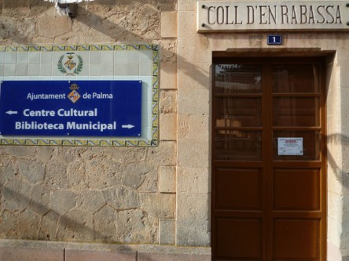

-
Teléfono
-
Horario
Lunes y Viernes de 8:30h a 14:30h
Martes, Miércoles y Jueves de 14:30h a 20:30h
Sábados de 9h a 13h
Historia
Esta Biblioteca está situada donde estaba la antigua estación del tren que iba de Palma a Llucmajor. La línea fue inaugurada en 1916 y permaneció activa hasta 1964. Debido a la carencia de centros educativos en el barrio provocada por el baby boom, en 1974 fue rehabilitada como escuela de refuerzo para EGB. Como ya no era necesario tener otra escuela, en 1985 se inauguró la Biblioteca del Coll de'n Rabassa.
Cuenta con dos salas de lectura-una para la gente más pequeña, sala infantil-, que están a disposición del usuario que tenga el carnet de la Red de Bibliotecas Municipales. Tiene 38 puntos de lectura a disposición del usuario. Todos los sábados se llevan a cabo actividades de lectura, talleres y cuentacuentos para los más pequeños, para que se familiaricen con su biblioteca. También dispone de un "rincón de intercambio" de libros procedentes de donaciones de entidades privadas y públicas.
Servicios
A continuación podrá leer una lista de los servicios proporcionados por la biblioteca, para más información use la flecha para desplegarlo.
Cómo acceder?
Pulsa "Usuarios Registrados", luego "Registro". Rellena donde indica tu nombre y el número del carnet que es el que encontrarás escrito bajo el código de barras del carnet y "Enviar". Ahora ya estás en tu registro personal. Desde aquí puedes renovar los préstamos, comprobar el estado de las reservas, realizar búsquedas...
Actividades
Club de lectura
Nos reunimos una vez a la semana para comentar entre todos el libro elegido. Todos los viernes de 10:00h a 12:00h
Talleres
Numerosos talleres, cada semana hacemos algo novedoso: manualidades, juegos de mesa... Todos los sábados de 9:00h a 13:00h
Presentación de libros
Se organizan presentaciones de libros, charlas y conferencias en colaboración con autores y editoriales
Teatro
Nos reunimos para poder disfrutar de una actuación teatral. El último sábado de cada mes de 11:00 a 13:00
Cuenta cuentos
Leemos cuentos de la mano de uno de nuestros trabajadores especializados y nos divertimos juntos. Todos los jueves de 17:00 a 19:00
Visitas guiadas
Hay visitas guiadas dirigidas a asociaciones, grupos y en general a todas aquellas personas interesadas en conocer las instalaciones, materiales y servicios que ofrecemos
{kind=link}
{kind=link}
{kind=link}
{kind=link}
{kind=link}
{kind=link}